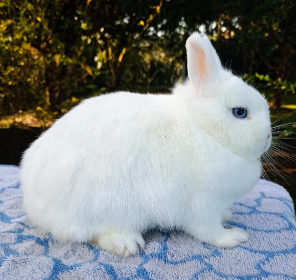
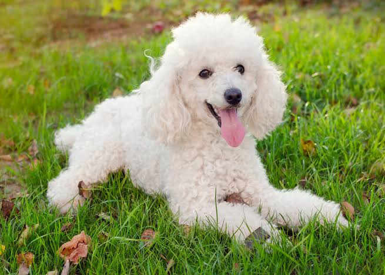
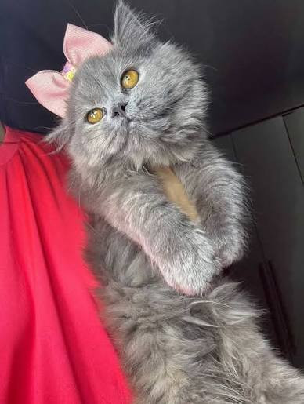
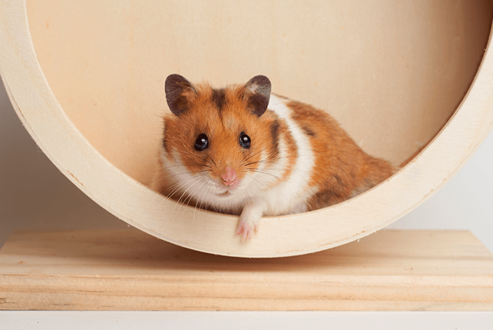
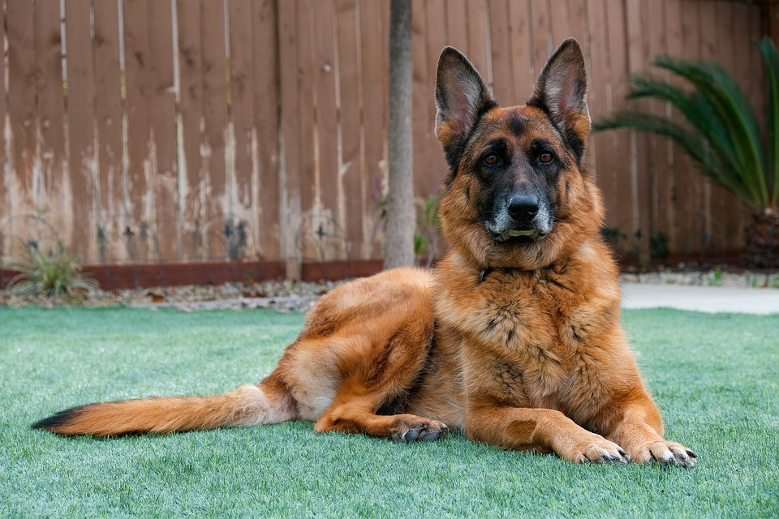

Adoção
Pesquisa de Pets
Encontre animais disponíveis para adoção utilizando filtros inteligentes por espécie, porte, idade e cidade mais próxima.
O PetAlert conecta animais que precisam de um lar a pessoas dispostas a transformar suas vidas por meio da adoção responsável.




Nascemos para construir uma ponte confiável, segura e acolhedora entre doadores e adotantes, incentivando a proteção e a adoção consciente de animais.
Facilitamos a conexão direta entre pessoas e protetores que acolheram animais em situação de vulnerabilidade com quem sonha em ter um fiel companheiro em casa.
Nossos filtros de pesquisa permitem encontrar animais por proximidade geográfica, porte e espécie, tornando o processo de adoção viável, rápido e seguro.
Incentivamos a guarda responsável, prevenção de abandono e oferecemos canal formal para denúncias de maus-tratos para que nenhum animal fique desamparado.
Em três passos transparentes e cuidadosos, você encontra seu novo melhor amigo e começa uma nova história repleta de amor.
Navegue pela galeria de pets disponíveis para adoção. Use filtros por espécie, porte, idade e cidade para descobrir o bichinho ideal para o seu estilo de vida.
Ver catálogo de pets →Acesse o perfil do animal, conheça o temperamento e utilize nosso chat em tempo real para tirar dúvidas e conversar diretamente com o tutor responsável.
Saber sobre o chat →Alinhe os cuidados essenciais, vacinação e ambiente seguro. Com tudo pronto, realize a adoção com afeto, segurança e a certeza de um recomeço feliz!
Criar conta para adotar →Cada ferramenta foi desenvolvida com carinho e precisão para aproximar pessoas, amparar animais e garantir total segurança.
Encontre animais disponíveis para adoção utilizando filtros inteligentes por espécie, porte, idade e cidade mais próxima.
Permita que doadores e protetores cadastrem animais que precisam de um novo lar com fotos, temperamento e história.
Assistente inteligente integrada que tira dúvidas sobre sintomas, comportamento, adaptação do pet e cuidados diários.
Facilite a comunicação direta e segura entre adotantes e tutores para esclarecer dúvidas e agendar encontros.
Permita registrar com sigilo e rapidez ocorrências de maus-tratos ou animais em situação de perigo iminente.
Contribua financeiramente via PIX com alimentação, vacinas e cuidados emergenciais para animais resgatados.
Estes são alguns dos animais carinhosos que estão prontos para receber e dar muito amor em uma nova família.

Cão • Porte MédioSeja adotando um animalzinho ou ajudando a divulgar quem precisa de socorro, a sua participação transforma vidas. Junte-se à nossa comunidade hoje mesmo.